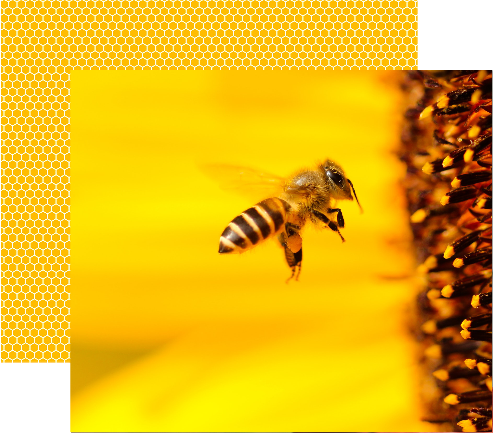
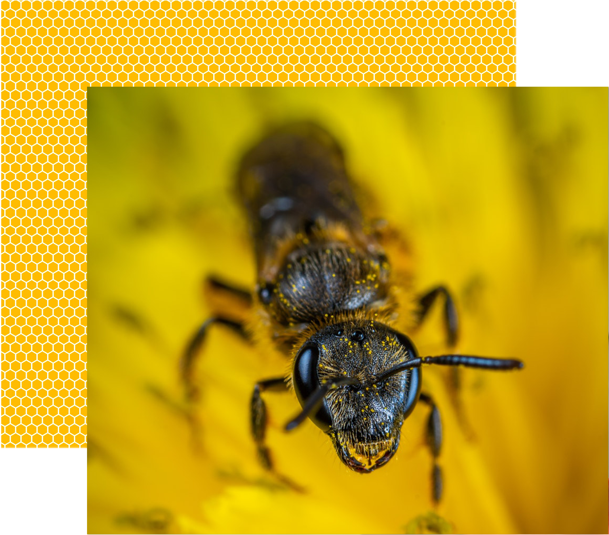

Diseases

The common agents of disease that affect adult honey bees include fungi, bacteria, protozoa, viruses, parasites, and poisons. The gross symptoms displayed by affected adult bees are very similar, whatever the cause, making it difficult for the apiarist to ascertain the causes of problems without microscopic identification of microorganisms or chemical analysis of poisons. Since 2006 colony losses from Colony Collapse Disorder have been increasing across the world although the causes of the syndrome are, as yet, unknown. In the US, commercial beekeepers have been increasing the number of hives to deal with higher rates of attrition.
Parasites

Galleria mellonella and Achroia grisella “wax moth” larvae that hatch, tunnel through, and destroy comb that contains bee larvae and their honey stores. The tunnels they create are lined with silk, which entangles and starves emerging bees. Destruction of honeycombs also results in honey leaking and being wasted. A healthy hive can manage wax moths, but weak colonies, unoccupied hives, and stored frames can be decimated.
Small hive beetle (Aethina tumida) is native to Africa but has now spread to most continents. It is a serious pest among honey bees unadapted to it.
Varroa destructor, the Varroa mite, is an established pest of two species of honey bee through many parts of the world, and is blamed by many researchers as a leading cause of CCD.
Acarapis woodi, the tracheal mite, infests the trachea of honey bees. The intensive management for Varroa has apparently reduced this parasite concurrently.
World Apiculture
According to U.N. FAO data, the world's beehive stock rose from around 50 million in 1961 to around 83 million in 2014, which comes to about 1.3% average annual growth. Average annual growth has accelerated to 1.9% since 2009.